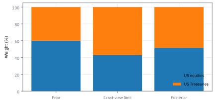
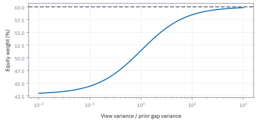
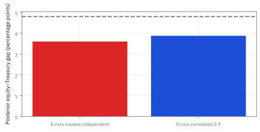

17.9 The Black-Litterman Model
Black–Litterman ไม่เดาผลตอบแทนคาดหวังจากข้อมูลอดีต แต่ถามกลับว่าผลตอบแทนคาดหวังชุดไหนทำให้พอร์ตที่ถืออยู่เป็นพอร์ตที่ดีที่สุดพอดี แล้วผสมความเห็นของทีมวิจัยเข้าไปตามความมั่นใจ พอร์ตจึงขยับจากเดิมเฉพาะในทิศที่ความเห็นพูดถึง
กองทุนหนึ่งดูแลเงินลูกค้า และแบ่งเงินไว้สองกอง กองแรกเป็นหุ้น กองที่สองเป็นพันธบัตร พันธบัตรคือตราสารหนี้ที่จ่ายดอกเบี้ยสม่ำเสมอ ราคาแกว่งน้อยกว่าหุ้น ทุกไตรมาสทีมวิจัยจะส่งความเห็นมาว่าปีหน้าอะไรน่าจะดีกว่าอะไร แล้วผู้จัดการกองทุนต้องตัดสินใจว่าจะย้ายเงินหรือไม่
ของที่รู้ (ตัวเลขสมมติ):
- เงินทั้งกองทุน \$10 ล้าน
- วันนี้ถือหุ้น 60% คือ $0.6\times\$10$ ล้าน $=\$6$ ล้าน และพันธบัตร 40% คือ \$4 ล้าน ชุดของสินทรัพย์ที่ถืออยู่เรียกว่าพอร์ต (portfolio) และเรียกพอร์ตนี้สั้น ๆ ว่าพอร์ต 60/40
- ทีมวิจัยบอกว่า “ปีหน้าหุ้นจะให้ผลตอบแทนมากกว่าพันธบัตร 3 จุดเปอร์เซ็นต์” ผลตอบแทนคือกำไรในหนึ่งปี คิดเป็นเปอร์เซ็นต์ของเงินที่ลงไป เช่น หุ้นได้ 7% พันธบัตรได้ 4% ส่วนต่างคือ $7\%-4\%=3$ จุดเปอร์เซ็นต์ (จุดเปอร์เซ็นต์คือผลลบของเปอร์เซ็นต์สองตัว ต่อไปจะเรียกสั้น ๆ ว่า “จุด”)
- ทีมวิจัยไม่มั่นใจเต็มร้อยว่าตัวเลข 3 จุดนี้จะถูก
ผู้จัดการคนหนึ่งบอกว่า “ทีมวิจัยว่าหุ้นดีกว่า ก็ต้องเพิ่มหุ้น” ควรเพิ่มหรือลดหุ้น และย้ายเงินกี่ดอลลาร์?
ลองตอบก่อนเปิดเฉลย
ควรลดหุ้น ไม่ใช่เพิ่ม หน้านี้จะคำนวณตัวเลขต่อไปนี้ให้ดูทีละขั้น
เหตุผลคือ พอร์ต 60/40 ที่ถืออยู่มีความเชื่อซ่อนอยู่แล้ว ถ้าถามว่าส่วนต่างหุ้นลบพันธบัตรต้องเป็นเท่าไร พอร์ต 60/40 จึงจะเป็นพอร์ตที่ดีที่สุด คำตอบคือ 4.8 จุด (ขั้นที่ 1 จะย้อนหาตัวเลขนี้) ทีมวิจัยบอกแค่ 3 จุด ซึ่งน้อยกว่าที่พอร์ตเดิมเชื่อ ความเห็นนี้จึงเป็นข่าวร้ายของหุ้น ไม่ใช่ข่าวดี
ถ้าเชื่อพอร์ตเดิมกับทีมวิจัยเท่า ๆ กัน ส่วนต่างหลังผสมคือ $(4.8+3.0)/2=3.9$ จุด และหุ้นควรลดเหลือ 51.43% (ขั้นที่ 6 จะคำนวณ) เงินที่ย้ายจากหุ้นไปพันธบัตรคือ $(0.6-0.5142857)\times\$10{,}000{,}000\approx\$857{,}143$
ภาพรวมก่อนลงสูตร
การเลือกน้ำหนักพอร์ตด้วยสูตรแบบ Markowitz (ดู Markowitz Portfolio Theory) ต้องใช้ผลตอบแทนคาดหวังของสินทรัพย์ทุกตัว ผลตอบแทนคาดหวังคือค่าเฉลี่ยของผลตอบแทนที่คาดว่าจะได้ในหนึ่งปี ต่อไปจะเรียกสั้น ๆ ว่า “ค่าเฉลี่ย” ปัญหาคือ ค่าเฉลี่ยเป็นตัวเลขที่ประมาณจากข้อมูลอดีตได้แย่ที่สุด เพราะผลตอบแทนแกว่งแรงมากเมื่อเทียบกับค่าเฉลี่ย เช่น หุ้นที่แกว่ง 20% ต่อปี ถ้าใช้ข้อมูล 20 ปี ค่าเฉลี่ยที่ได้ยังคลาดได้ราว $20\%/\sqrt{20}\approx4.5\%$ ซึ่งพอ ๆ กับตัวค่าเฉลี่ยเอง และ optimizer (โปรแกรมที่หาน้ำหนักที่ดีที่สุด) ก็ไวต่อมันที่สุด ค่าเฉลี่ยคลาดนิดเดียว น้ำหนักก็เหวี่ยงไปสุดทาง หน้า Covariance Shrinkage (Ledoit-Wolf) แสดงเรื่องนี้ไว้แล้ว
Fischer Black กับ Robert Litterman จึงถามกลับด้าน แทนที่จะเดาค่าเฉลี่ยจากอดีต ให้เริ่มจากพอร์ตที่ถืออยู่แล้ว เช่น พอร์ต 60/40 หรือ benchmark ของกองทุน (benchmark คือพอร์ตอ้างอิงที่กองทุนใช้วัดผลงานของตัวเอง เช่น ดัชนีตลาด) แล้วถามว่า “ค่าเฉลี่ยชุดไหนทำให้พอร์ตนี้เป็นพอร์ตที่ดีที่สุดพอดี” ค่าเฉลี่ยชุดนั้นคือจุดตั้งต้น เรียกว่า prior แปลว่าความเชื่อก่อนฟังความเห็นใคร
จากนั้นใส่เฉพาะเรื่องที่ทีมวิจัยมีความเห็น เรียกว่า view (หน้านี้เรียกเป็นไทยว่า “ความเห็น”) พร้อมบอกว่ามั่นใจแค่ไหน แล้วผสม prior กับ view ด้วยกฎของ Bayes' Theorem ผลที่ได้เรียกว่า posterior แปลว่าความเชื่อหลังฟังความเห็นแล้ว
รูปด้านล่างเล่าทั้งเรื่องในภาพเดียว ตัวเลขที่ดูคือส่วนต่างค่าเฉลี่ยของหุ้นลบพันธบัตร
- prior บอก 4.8 จุด (ขั้นที่ 1 จะย้อนหาตัวเลขนี้)
- view บอก 3.0 จุด ตามที่ทีมวิจัยส่งมา
- สองฝั่งไม่แน่นอนเท่ากัน (ในรูปกว้างเท่ากัน) จึงได้น้ำหนักฝั่งละครึ่ง posterior จึงอยู่กึ่งกลาง คือ $(4.8+3.0)/2=3.9$ จุด
- posterior แคบกว่าทั้งสองฝั่ง เพราะได้ข้อมูลสองแหล่งมาช่วยกัน ความไม่รู้จึงลดลง
หน้านี้เดินตามลำดับนี้
- ย้อนหาค่าเฉลี่ยที่ซ่อนอยู่ในพอร์ต 60/40 แล้วดูว่ามันคือสิ่งเดียวกับที่ CAPM ทำนาย
- เขียนความเห็นของทีมวิจัยเป็นสมการ พร้อมตัวเลขความไม่แน่นอน
- ผสม prior กับ view ด้วยสูตรค่าเฉลี่ยแบบมีเงื่อนไขของ Normal หลายตัวแปร แล้วแปลงผลเป็นน้ำหนักพอร์ต
- หมุนปุ่มความมั่นใจ ดูกับดักของการนับความเห็นเดียวกันสองครั้ง และดูความไม่แน่นอนที่ยังเหลือ
รูป — prior กับ view รวมกันเป็น posterior
ศัพท์ที่ใช้ในหัวข้อนี้
- ผลตอบแทนส่วนเกิน (excess return)
- ผลตอบแทนลบดอกเบี้ยเงินสด เช่น หุ้นได้ 9% เงินฝากได้ 2% ส่วนเกินคือ $9\%-2\%=7\%$ ผลตอบแทนทุกตัวในหน้านี้เป็นแบบส่วนเกิน
- จุด (จุดเปอร์เซ็นต์)
- ผลลบของเปอร์เซ็นต์สองตัว เช่น $6.4\%-1.6\%=4.8$ จุด
- พอร์ตอ้างอิง (benchmark)
- พอร์ตที่กองทุนถือเป็นค่าปกติ และใช้วัดผลงาน ในหน้านี้คือพอร์ต 60/40
- Reverse optimization
- การย้อนทาง ปกติเรารู้ค่าเฉลี่ยแล้วหาน้ำหนัก ครั้งนี้รู้น้ำหนักแล้วหาค่าเฉลี่ยที่ทำให้น้ำหนักนั้นดีที่สุดพอดี ไม่ต้องใช้ค่าเฉลี่ยจากอดีต แต่ยังต้องเลือก covariance และ $\delta$ เอง
- Prior
- ความเชื่อก่อนฟังความเห็นของทีมวิจัย ในหน้านี้คือค่าเฉลี่ยที่ย้อนได้จากพอร์ต 60/40 พร้อมตัวเลขว่าไม่แน่ใจแค่ไหน
- View (ความเห็น)
- ความเห็นเรื่องค่าเฉลี่ยของสินทรัพย์ตัวเดียว หรือส่วนต่างของหลายตัว พร้อมตัวเลขว่าไม่มั่นใจแค่ไหน ข้อดีคือ ใส่ความเห็นเฉพาะเรื่องที่มี ไม่ต้องเดาค่าเฉลี่ยทุกตัว
- Posterior
- ความเชื่อหลังผสม prior กับ view แต่ละฝั่งได้น้ำหนักตามความแม่น ฝั่งที่แม่นกว่าได้น้ำหนักมากกว่า ใช้คำนวณน้ำหนักพอร์ตสุดท้าย
- ความแม่น (precision)
- หนึ่งหารด้วย variance ยิ่ง variance เล็ก ยิ่งแม่น เช่น variance 0.0021 มีความแม่น $1/0.0021\approx476$
- Risk aversion $\delta$
- ตัวเลขที่บอกว่านักลงทุนกลัวการแกว่งแค่ไหน คือต้องได้ผลตอบแทนเพิ่มเท่าไร จึงยอมให้ variance ของพอร์ตเพิ่มหนึ่งหน่วย ในหน้านี้ $\delta=2.5$ ขั้นที่ 2 จะแสดงว่ามาจากไหน
- $\tau$ (tau)
- ตัวคูณที่บอกว่าเราไม่รู้ค่าเฉลี่ยจริงแค่ไหน เทียบกับการแกว่งของผลตอบแทนรายปี หน้านี้ใช้ $\tau=0.05$ (สมมติ) ค่าที่ใช้กันในงานเขียนเรื่องนี้อยู่ราว 0.01 ถึง 0.1 วิธีคิดง่าย ๆ คือ ถ้าประมาณค่าเฉลี่ยจากข้อมูล $T$ ปี variance ของค่าเฉลี่ยคือ variance รายปีหารด้วย $T$ ดังนั้น $\tau=0.05=1/20$ เทียบได้กับการรู้ค่าเฉลี่ยจากข้อมูลประมาณ 20 ปี
- Active tilt
- ส่วนที่น้ำหนักสุดท้ายต่างจากน้ำหนักอ้างอิง Black–Litterman ทำให้ส่วนนี้เกิดเฉพาะในทิศที่ความเห็นพูดถึง
สัญลักษณ์และหน่วย
| สัญลักษณ์ | ความหมาย | หน่วย |
|---|---|---|
| $\Sigma$ | covariance matrix ของผลตอบแทนรายปี บอกว่าแต่ละตัวแกว่งแค่ไหน และแกว่งไปด้วยกันแค่ไหน | สัดส่วนกำลังสอง |
| $w_m$ | น้ำหนักอ้างอิง $(0.6,\ 0.4)$ ของหุ้นและพันธบัตร | สัดส่วน |
| $\delta$ | risk aversion ความกลัวการแกว่ง | ต่อสัดส่วน |
| $\Pi$ | ค่าเฉลี่ยของผลตอบแทนส่วนเกินที่ซ่อนอยู่ในน้ำหนักอ้างอิง (ค่ากลางของ prior) | ต่อปี |
| $\beta_i$ | beta ของสินทรัพย์ $i$ เทียบพอร์ตอ้างอิง | ไม่มีหน่วย |
| $\mu$ | ค่าเฉลี่ยจริงของผลตอบแทนส่วนเกิน ซึ่งเราไม่รู้ | ต่อปี |
| $\tau$ | ตัวคูณความไม่แน่นอนของ prior | ไม่มีหน่วย |
| $P,\ q$ | $P$ คือ matrix ที่บอกว่าความเห็นแต่ละข้อพูดถึงสินทรัพย์ไหน $q$ คือตัวเลขที่ความเห็นอ้าง | ไม่มีหน่วย และต่อปี |
| $\Omega$ | covariance ของความคลาดของความเห็น ยิ่งใหญ่ยิ่งไม่มั่นใจ | สัดส่วนกำลังสอง |
| $h$ | ความประหลาดใจหารด้วย variance รวม ใช้เป็นตัวคูณในขั้นที่ 5 และ 6 | ต่อสัดส่วน |
| $\mu_{\text{post}},\ M$ | ค่าเฉลี่ยหลังผสม และความไม่แน่นอนของค่าเฉลี่ยที่ยังเหลือ | ต่อปี และสัดส่วนกำลังสอง |
| $w^*$ | น้ำหนักสุดท้าย | สัดส่วน |
ขั้นที่ 1 — ย้อนจากน้ำหนักไปหาค่าเฉลี่ย
ก่อนจะรู้ว่าความเห็น 3 จุดของทีมวิจัยดีหรือร้าย เราต้องรู้ก่อนว่าพอร์ต 60/40 “เชื่อ” อะไรอยู่ ขั้นนี้จึงย้อนหาค่าเฉลี่ยที่ซ่อนอยู่ในพอร์ต 60/40 โดยไม่ใช้ข้อมูลอดีตเลย
ของที่รู้ (ตัวเลขสมมติ คิดต่อปี และเป็นผลตอบแทนส่วนเกินทั้งหมด คือหักดอกเบี้ยเงินสดออกแล้ว):
- หุ้นมีความผันผวน $\sigma_1=20\%$ คือ SD ของผลตอบแทนรายปี จึงมี variance $\sigma_1^2=0.2^2=0.04$
- พันธบัตรมีความผันผวน $\sigma_2=10\%$ จึงมี variance $\sigma_2^2=0.1^2=0.01$
- correlation ของหุ้นกับพันธบัตร $\rho=0.2$ คือตัวเลขระหว่าง −1 ถึง 1 ที่บอกว่าสองตัวขึ้นลงพร้อมกันแค่ไหน ค่า 0.2 แปลว่าไปทางเดียวกันเล็กน้อย covariance ของสองตัวจึงเป็น $\sigma_{12}=\rho\sigma_1\sigma_2=0.2\times0.2\times0.1=0.004$
- น้ำหนักอ้างอิง $w_m=(0.6,\ 0.4)$
- risk aversion $\delta=2.5$ ขั้นที่ 2 จะแสดงว่าตัวเลขนี้มาจากไหน
นำ variance และ covariance มาเรียงเป็น covariance matrix $\Sigma$ ช่องแนวทแยงคือ variance ช่องนอกแนวทแยงคือ covariance
นักลงทุนแบบ Markowitz (ดู Markowitz Portfolio Selection) ให้คะแนนพอร์ตน้ำหนัก $w$ ด้วย $U(w)$ ข้างล่าง คือผลตอบแทนคาดหวังของพอร์ต $w^{\mathsf T}\Pi$ ลบค่าปรับของการแกว่ง $\frac{\delta}{2}w^{\mathsf T}\Sigma w$ เขาจึงเลือก $w$ ที่ทำให้ $U(w)$ สูงสุด น้ำหนักไม่ต้องรวมเป็น 1 เพราะเงินที่เหลือถือเป็นเงินสด หรือถ้าเกินก็กู้เงินสดมา
ปกติเรารู้ค่าเฉลี่ย $\Pi$ แล้วหาน้ำหนัก ครั้งนี้กลับด้าน เรารู้น้ำหนัก 60/40 แล้วหา $\Pi$ ที่ทำให้ 60/40 เป็นจุดสูงสุดพอดี
ที่จุดสูงสุด ความชันของ $U$ ต้องเป็นศูนย์ทุกทิศ เรียกว่า gradient เป็นศูนย์ (ดู The Gradient and First-Order Conditions) อนุพันธ์ของ $w^{\mathsf T}\Pi$ คือ $\Pi$ และอนุพันธ์ของ $w^{\mathsf T}\Sigma w$ คือ $2\Sigma w$ ตัว 2 จึงตัดกับ $\frac12$ เหลือ $\Pi-\delta\Sigma w=0$
จังหวะที่น่าสนใจคือการกลับด้าน ปกติเราใช้สมการนี้แก้หา $w$ ซึ่งต้อง invert $\Sigma$ แต่ครั้งนี้เรารู้ $w_m$ อยู่แล้ว จึงได้ $\Pi=\delta\Sigma w_m$ ทันทีด้วยการคูณ matrix ธรรมดา ผลคือหุ้นมีค่าเฉลี่ยส่วนเกิน 6.4% พันธบัตร 1.6% ต่อปี ส่วนต่างคือ $6.4-1.6=4.8$ จุด นี่คือ 4.8 จุดที่โจทย์ต้นหน้าพูดถึง
ข้อควรระวังคือ ตัวเลขนี้ขึ้นกับ $\Sigma$ และ $\delta$ ที่เราเลือกเอง ราคาตลาดไม่ได้บอกมาตรง ๆ และเพราะ $\Pi=\delta\Sigma w_m$ ถ้า $\delta$ โตขึ้นกี่เท่า $\Pi$ ทั้งชุดก็โตขึ้นเท่านั้น ขั้นถัดไปจะดูว่า $\delta$ ควรเป็นเท่าไร และ $\Pi$ มีความหมายอย่างไร
ขั้นที่ 2 — ค่าเฉลี่ยที่ย้อนได้คือ CAPM
ขั้นที่แล้วยังมีคำถามค้างอยู่สองข้อ ข้อแรก $\delta=2.5$ มาจากไหน ข้อสอง หุ้น 6.4% กับพันธบัตร 1.6% มีเหตุผลอะไรรองรับ ขั้นนี้ตอบทั้งสองข้อ
เริ่มจากเหตุผลทางเศรษฐศาสตร์ สมมติว่าทุกคนในตลาดเลือกพอร์ตแบบ Markowitz และเชื่อตัวเลขชุดเดียวกัน ทุกคนจะถือพอร์ตเสี่ยงหน้าตาเดียวกัน คือพอร์ต tangency (พอร์ตเสี่ยงที่ผลตอบแทนส่วนเกินหารด้วยความผันผวนได้สูงที่สุด ดู Markowitz Portfolio Theory) ต่างกันแค่ว่าแต่ละคนผสมเงินสดมากน้อยเท่าไร พอรวมพอร์ตของทุกคนเข้าด้วยกัน ก็ได้พอร์ตของทั้งตลาด พอร์ตตลาดจึงต้องเป็นพอร์ต tangency และค่าเฉลี่ยที่ทำให้มันดีที่สุด ก็คือค่าเฉลี่ยที่ CAPM ทำนาย CAPM คือแบบจำลองที่บอกว่าค่าเฉลี่ยส่วนเกินของสินทรัพย์แต่ละตัว เท่ากับ beta ของมันคูณค่าเฉลี่ยส่วนเกินของตลาด (ดู Capital Asset Pricing Model (CAPM) — Beta, Alpha, and Required Return)
ในตัวอย่างนี้ เราสมมติว่าทั้งตลาดมีแค่หุ้นกับพันธบัตร และพอร์ต 60/40 คือพอร์ตตลาด
ต่อไปคือการคำนวณ ใส่ $w_m^{\mathsf T}$ คูณข้างหน้าทั้งสองข้างของ $\Pi=\delta\Sigma w_m$ ข้างซ้ายจะกลายเป็นผลตอบแทนส่วนเกินของพอร์ตอ้างอิง เรียกว่า $\mu_m$ ข้างขวาจะมี variance ของพอร์ตอ้างอิง เรียกว่า $\sigma_m^2$ จากนั้นแก้หา $\delta$ แล้วแทนกลับ
$\delta$ จึงเป็น “ผลตอบแทนส่วนเกินของตลาด หารด้วย variance ของตลาด” เขียนอีกแบบได้เป็น Sharpe ratio ของตลาด (ผลตอบแทนส่วนเกินหารด้วยความผันผวน) หารด้วยความผันผวนของตลาดอีกครั้ง
ในตัวอย่างนี้เราเลือก $\delta=2.5$ ก่อน แล้วย้อนกลับมาเห็นว่ามันตรงกับ Sharpe ของตลาด 0.335 ในงานจริงทำกลับกัน คือเลือก Sharpe ของตลาดที่เชื่อก่อน แล้วคำนวณ $\delta$ จากมัน ตัวเลข $\delta$ จึงไม่ได้เลือกลอย ๆ
ส่วนเรื่องที่สอง ให้ดูที่ $(\Sigma w_m)_i$ ถ้าเขียนผลตอบแทนของสินทรัพย์ทั้งสองเป็นเวกเตอร์ $r$ ผลตอบแทนของพอร์ตอ้างอิงคือ $w_m^{\mathsf T}r$ และ $\operatorname{Cov}(r,\ w_m^{\mathsf T}r)=\Sigma w_m$ ดังนั้น $(\Sigma w_m)_i$ คือ covariance ของสินทรัพย์ $i$ กับพอร์ตอ้างอิง พอหารด้วย variance ของพอร์ตอ้างอิง ก็ได้ beta ของสินทรัพย์นั้น beta บอกว่าเมื่อพอร์ตอ้างอิงขยับ 1% สินทรัพย์นี้ขยับตามโดยเฉลี่ยกี่เปอร์เซ็นต์ ค่าเฉลี่ยที่ย้อนได้จึงเท่ากับ beta คูณผลตอบแทนส่วนเกินของตลาด ซึ่งก็คือสูตรของ CAPM
หุ้นได้ 6.4% เพราะ beta ของมันคือ 1.43 ไม่ใช่เพราะใครเดาว่าหุ้นดี prior ของ Black–Litterman จึงมีเหตุผลรองรับ มันคือค่าเฉลี่ยที่ตลาดต้องมี ถ้าทุกคนพอใจกับพอร์ตที่ถืออยู่
รูป — ค่าเฉลี่ยที่ย้อนได้อยู่บนเส้นตรงของ beta
ขั้นที่ 3 — เขียนความเห็นและความไม่แน่นอนของสองฝั่ง
ตอนนี้มีจุดตั้งต้นแล้ว ขั้นต่อไปคือเอาความเห็นของทีมวิจัยมาเขียนเป็นสมการ เพื่อให้คอมพิวเตอร์ผสมได้ และต้องบอกด้วยว่าเชื่อแต่ละฝั่งแค่ไหน
ความเห็น “หุ้นชนะพันธบัตร 3 จุด” พูดถึงส่วนต่าง จึงเขียนด้วยสองตัวนี้
- $P=[1,\ -1]$ เป็นแถวที่บอกว่าความเห็นพูดถึงสินทรัพย์ไหน ช่องแรกคือหุ้น ช่องที่สองคือพันธบัตร คูณกับค่าเฉลี่ยได้ $P\mu=\mu_1-\mu_2$ คือหุ้นลบพันธบัตร
- $q=0.03$ คือตัวเลขที่ความเห็นอ้าง 3 จุด
ต่อไปคือความไม่แน่นอนของสองฝั่ง แบบจำลอง Black–Litterman ตั้งไว้แบบนี้
- ฝั่ง prior เราไม่รู้ค่าเฉลี่ยจริง $\mu$ แต่เชื่อว่ามันกระจายแบบ Normal รอบ $\Pi$ ด้วย covariance $\tau\Sigma$ หน้านี้ใช้ $\tau=0.05$ (สมมติ) คือ variance ของความไม่รู้ในค่าเฉลี่ย เป็น 5% ของ variance รายปี เทียบได้กับรู้ค่าเฉลี่ยจากข้อมูลราว $1/0.05=20$ ปี
- ฝั่ง view ตัวเลขที่ทีมวิจัยบอกคือค่าจริง $P\mu$ บวกความคลาด $\epsilon$ ความคลาดนี้มี variance $\Omega$ ยิ่ง $\Omega$ ใหญ่ ยิ่งไม่มั่นใจ
ในตัวอย่างนี้เราเลือก $\Omega$ ให้เท่ากับ variance ของส่วนต่างตาม prior พอดี แปลว่าเชื่อทีมวิจัยเท่ากับเชื่อพอร์ตเดิม
การคูณด้วย $P^{\mathsf T}=(1,\ -1)$ ทางขวา คือเอาคอลัมน์แรกลบคอลัมน์ที่สอง ผลลัพธ์ $\tau\Sigma P^{\mathsf T}$ บอกว่าค่าเฉลี่ยของแต่ละสินทรัพย์เกี่ยวกับส่วนต่างแค่ไหน ส่วน $P\tau\Sigma P^{\mathsf T}=0.0021$ คือ variance ของส่วนต่างตาม prior ตรวจได้อีกทางด้วยสูตร variance ของผลลบ $\tau(\sigma_1^2+\sigma_2^2-2\sigma_{12})=0.05(0.04+0.01-0.008)=0.0021$ SD ของมันคือ $\sqrt{0.0021}=0.046$ หรือ 4.6 จุด
$\Omega=0.0021$ ไม่ใช่โอกาสที่ทีมวิจัยจะทายถูก มันคือความกว้างของความคลาดที่เรายอมรับ เท่ากับบอกว่าความเห็น 3 จุดอาจคลาดได้ราว ±4.6 จุด (หนึ่ง SD)
ตัวเลขสุดท้าย $q-P\Pi=-0.018$ คือหัวใจของโจทย์ต้นหน้า เราเรียกมันว่า “ความประหลาดใจ” คือสิ่งที่ความเห็นบอก ลบสิ่งที่พอร์ตเดิมเชื่ออยู่แล้ว พอร์ตเดิมเชื่อ 4.8 จุด ความเห็นบอก 3 จุด ความเห็นจึงต่ำกว่าที่เชื่ออยู่ 1.8 จุด ทั้งที่ยังบอกว่าหุ้นดีกว่าพันธบัตร สิ่งที่ขยับพอร์ตคือเครื่องหมายของความประหลาดใจ ไม่ใช่เครื่องหมายของความเห็น
ขั้นที่ 4 — ผสมด้วยค่าเฉลี่ยแบบมีเงื่อนไขของ Normal
เรามีข้อมูลสองแหล่งเกี่ยวกับ $\mu$ ที่ไม่รู้ คือ prior กับความเห็น $q$ ทั้งคู่มีความคลาด คำถามคือ เมื่อได้ยิน $q$ แล้ว ค่าเฉลี่ยที่ดีที่สุดของ $\mu$ ควรเป็นเท่าไร
เพราะ $\mu$ เป็น Normal และ $q$ คือ $P\mu$ บวกความคลาดแบบ Normal ทั้งสองจึงเป็น Normal ร่วมกัน คำถามนี้มีสูตรสำเร็จอยู่แล้ว เป็นสูตรเดียวกับที่ใช้หา hedge ratio ในหน้า The MVN Conditional Distribution and the Hedge Ratio สำหรับ $X$ กับ $Y$ ที่เป็น Normal ร่วมกัน
อ่านว่า ค่าเฉลี่ยใหม่คือค่าเฉลี่ยเดิม บวกส่วนแก้ ส่วนแก้คือความประหลาดใจ $y-\mathbb E[Y]$ ที่ถูกย่อหรือขยายด้วย covariance หารด้วย variance ใส่ $X=\mu$ และ $Y=q$ แล้วหาสามก้อนที่สูตรต้องใช้ โดยใช้ว่าความคลาด $\epsilon$ มีค่าเฉลี่ยศูนย์ และไม่เกี่ยวกับ $\mu$
ทำไม $\operatorname{Cov}(\mu,q)=\tau\Sigma P^{\mathsf T}$ เพราะ $q=P\mu+\epsilon$ และ $\epsilon$ ไม่เกี่ยวกับ $\mu$ จึงเหลือแค่ $\operatorname{Cov}(\mu,\mu)P^{\mathsf T}$ ซึ่ง $\operatorname{Cov}(\mu,\mu)$ ก็คือ $\tau\Sigma$ ส่วน $\operatorname{Var}(q)$ มีสองก้อนบวกกัน เพราะความไม่รู้ใน $P\mu$ กับความคลาด $\epsilon$ ไม่เกี่ยวกัน variance จึงบวกกันตรง ๆ
อ่านสูตรผลลัพธ์จากขวาไปซ้าย $(q-P\Pi)$ คือความประหลาดใจ ถ้าความเห็นตรงกับ prior ก้อนนี้เป็นศูนย์ และไม่มีอะไรขยับ ก้อนกลางคือตาชั่งความเชื่อ ถ้า $\Omega$ ใหญ่มาก (ไม่เชื่อความเห็นเลย) ก้อนนี้เข้าหาศูนย์ และคำตอบกลับไปที่ $\Pi$ ก้อนซ้าย $\tau\Sigma P^{\mathsf T}$ แปลงผลกลับเป็นค่าเฉลี่ยของสินทรัพย์ทุกตัว ผ่าน covariance ที่เชื่อมแต่ละตัวกับความเห็น
ถ้าดูแค่ส่วนต่าง สูตรนี้ยุบเหลือค่าเฉลี่ยถ่วงน้ำหนักด้วยความแม่น (ความแม่นคือหนึ่งหารด้วย variance) prior มี variance 0.0021 และ view ก็มี 0.0021 สองฝั่งจึงแม่นเท่ากัน
ตัวเลขทั้งสองตรงกับเส้นเขียวในรูปแรก ข้อดีอีกข้อของสูตรนี้คือ matrix ที่ต้อง invert มีขนาดเท่าจำนวนความเห็น ไม่ใช่จำนวนสินทรัพย์ ความเห็นมักมีไม่กี่ข้อ สูตรนี้จึงใช้ได้กับพอร์ตที่มีหลายร้อยตัว
ขั้นที่ 5 — ค่าเฉลี่ยหลังผสม
ตอนนี้มีสูตรผสมแล้ว ขั้นนี้แทนตัวเลขจริง เพื่อดูว่าค่าเฉลี่ยของหุ้นและพันธบัตรขยับไปเท่าไร
โจทย์ให้อะไรมาบ้าง: ทุกก้อนหาไว้แล้วในขั้นที่ 1 และขั้นที่ 3
- ค่าเฉลี่ยของ prior $\Pi=(0.064,\ 0.016)$
- $\tau\Sigma P^{\mathsf T}=(0.0018,\ -0.0003)$
- variance รวม $P\tau\Sigma P^{\mathsf T}+\Omega=0.0021+0.0021=0.0042$
- ความประหลาดใจ $q-P\Pi=-0.018$
เพราะมีความเห็นข้อเดียว การ invert จึงเป็นแค่การหารด้วยตัวเลขตัวเดียว 0.0042 เราเรียกผลของความประหลาดใจหารด้วย variance รวมว่า $h$ จะได้ใช้ซ้ำในขั้นต่อไป
คำตอบ: ค่าเฉลี่ยส่วนเกินของหุ้นลดจาก 6.4% เหลือ 5.6286% ของพันธบัตรเพิ่มจาก 1.6% เป็น 1.7286% ส่วนต่างเหลือ 3.9 จุด
ค่าเฉลี่ยขยับทั้งสองตัว แม้ความเห็นพูดถึงแค่ส่วนต่าง เพราะ covariance เชื่อมสองตัวเข้าด้วยกัน หุ้นรับการปรับไปเกือบทั้งหมด คือ $0.0018h\approx-0.0077$ หรือ −0.77 จุด ส่วนพันธบัตรขยับแค่ $-0.0003h\approx+0.0013$ หรือ +0.13 จุด เหตุผลคือค่าเฉลี่ยของหุ้นไม่แน่นอนกว่ามาก ($\tau\sigma_1^2=0.0020$ เทียบกับ $\tau\sigma_2^2=0.0005$ ของพันธบัตร) ตัวที่เรารู้น้อยกว่าจึงถูกแก้มากกว่า
แถวสุดท้ายในกล่องสูตรบอกว่าความเห็นได้น้ำหนักเท่าไร คือ $0.0021/0.0042=0.5$ หรือครึ่งหนึ่ง ส่วนต่างจึงขยับไปครึ่งทางจาก 4.8 ไปหา 3.0 ถ้าทีมวิจัยไม่มั่นใจมากขึ้นจน $\Omega$ ใหญ่ขึ้นสิบเท่า น้ำหนักของความเห็นจะลดลงมาก
ส่วนต่างจะขยับจาก 4.8 แค่ 0.16 จุด
ตรวจเองใน 10 วินาที: $0.056286-0.017286=0.039$ คือ 3.9 จุด และ $4.8-1.8(0.5)=3.9$ ตรงกัน
ขั้นที่ 6 — จากค่าเฉลี่ยเป็นน้ำหนัก: พอร์ตอ้างอิงบวก tilt
ผู้จัดการกองทุนไม่ได้ซื้อขายค่าเฉลี่ย เขาซื้อขายหุ้นและพันธบัตร ขั้นนี้จึงแปลงค่าเฉลี่ยหลังผสมกลับเป็นน้ำหนักพอร์ต ใช้สมการ gradient เป็นศูนย์ของขั้นที่ 1 เหมือนเดิม แต่คราวนี้แก้หา $w$ จาก $\mu_{\text{post}}-\delta\Sigma w=0$ ได้ $w^*=\Sigma^{-1}\mu_{\text{post}}/\delta$
ต้อง invert $\Sigma$ ซึ่งเป็น matrix 2×2 สูตรคือ สลับช่องแนวทแยง เปลี่ยนเครื่องหมายช่องนอกแนวทแยง แล้วหารด้วย determinant
จากนั้นหาน้ำหนักได้สองทาง ทางแรกคูณตรง ๆ ทางที่สองแทนสูตรเข้าไปก่อน แล้วดูว่าน้ำหนักแยกเป็นสองส่วนอย่างไร
ทางแรกให้หุ้น 51.43% ทางที่สองให้คำตอบเดียวกัน แต่บอกเหตุผลได้ชัดกว่า จังหวะสำคัญคือการแทน $\mu_{\text{post}}=\Pi+\tau\Sigma P^{\mathsf T}h$ แล้วแยกเป็นสองก้อน ก้อนแรก $\Sigma^{-1}\Pi/\delta$ ได้ $w_m$ กลับมาพอดี เพราะขั้นที่ 1 สร้าง $\Pi$ มาจาก $\Pi=\delta\Sigma w_m$ ก้อนที่สอง $\Sigma^{-1}\tau\Sigma=\tau I$ เพราะ $\Sigma^{-1}\Sigma$ คือ matrix เอกลักษณ์ จึงเหลือแค่ $P^{\mathsf T}$ ตัวคูณข้างหน้าคือ $\tau/\delta=0.05/2.5=0.02$
ผลคือ น้ำหนักสุดท้ายเท่ากับพอร์ตอ้างอิง บวกส่วนเบี่ยง (tilt) ที่ชี้ไปในทิศ $P^{\mathsf T}$ ของความเห็นเท่านั้น ในพอร์ตหลายร้อยตัว สินทรัพย์ที่ไม่มีความเห็นเลยจะไม่ถูกแตะ ไม่เหมือน optimizer แบบเดิมที่เอาความคลาดของค่าเฉลี่ยทุกตัวไปขยายเป็นน้ำหนักสุดโต่ง แบบที่เห็นในหน้า Covariance Shrinkage (Ledoit-Wolf)
ความเห็นนี้เป็นส่วนต่าง $P^{\mathsf T}=(1,\ -1)$ ส่วนที่ลดจากหุ้นจึงไปเพิ่มให้พันธบัตรเท่ากันพอดี น้ำหนักรวมยังเป็น 100% แปลงเป็นเงินได้ดังนี้
- หุ้น $0.5142857\times\$10{,}000{,}000\approx\$5{,}142{,}857$
- พันธบัตร $0.4857143\times\$10{,}000{,}000\approx\$4{,}857{,}143$
- เงินที่ย้ายจากหุ้นไปพันธบัตร $\$6{,}000{,}000-\$5{,}142{,}857=\$857{,}143$
ตรวจด้วยเศษส่วน $h=-0.018/0.0042=-30/7$ จึงได้ $w_1^*=0.6+0.02(-30/7)=0.6-3/35=18/35\approx0.514286$
รูป — จาก prior ผ่าน view ไปยังน้ำหนัก

ขั้นที่ 7 — ปุ่มความมั่นใจ
ในงานจริง ตัวเลขที่ตั้งยากที่สุดคือ $\Omega$ เพราะไม่มีใครรู้ว่าความเห็นของทีมวิจัยแม่นแค่ไหน ขั้นนี้จึงหมุนปุ่มความมั่นใจ แล้วดูว่าน้ำหนักหุ้นเปลี่ยนตามมากแค่ไหน
ตั้ง $\Omega=k\,P\tau\Sigma P^{\mathsf T}=0.0021k$ ตัว $k$ คือความไม่มั่นใจของความเห็น เทียบกับ prior
- $k=1$ คือเชื่อความเห็นเท่ากับเชื่อ prior แบบที่ใช้มาตลอด
- $k=3$ คือความเห็นมี variance เป็นสามเท่าของ prior คือเชื่อน้อยกว่า
- $k$ เข้าหาศูนย์คือเชื่อความเห็นเต็มที่
แทนลงในสูตรน้ำหนัก $w_1^*=0.6+0.02h$ ของขั้นที่แล้ว ตัวส่วนของ $h$ กลายเป็น $0.0021+0.0021k=0.0021(1+k)$ และตัวเลขข้างหน้าคือ $0.02\times0.018/0.0021=0.171429$
ทุกแถวคิดจากสูตรเดียวกัน เช่น $k=0.1$ ได้ $0.6-0.171429/1.1=0.6-0.155844=0.444156$ คือ 44.42% เมื่อไม่มั่นใจ ($k$ ใหญ่) ตัวส่วน $1+k$ ใหญ่ ส่วนที่ลบจึงเล็ก น้ำหนักกลับไปหา 60% เอง เมื่อมั่นใจมาก ($k$ เข้าหาศูนย์) น้ำหนักเข้าหา $0.6-0.171429=0.428571$ คือ 42.86% เท่าแท่งกลางในรูปน้ำหนัก
พฤติกรรมนี้คือสิ่งที่ต้องการ พอร์ตเบี่ยงจากพอร์ตอ้างอิงเท่าที่ความมั่นใจรองรับ แต่ก็แปลว่าผลลัพธ์ไวต่อตัวเลขที่คนใส่เอง และคนมักประเมินความมั่นใจของตัวเองสูงเกินจริง
มีอีกเรื่องที่น่าสังเกต เมื่อผูก $\Omega$ ไว้กับ $P\tau\Sigma P^{\mathsf T}$ แบบนี้ $\tau$ จะตัดกันเองในสูตรน้ำหนัก
สูตรที่เหลือไม่มี $\tau$ เลย มีแค่ $k$ ตรวจด้วย $k=1$ ได้ $-0.018/(2.5\times0.042\times2)=-0.018/0.21=-0.085714$ ตรงกับขั้นที่แล้ว ($P\Sigma P^{\mathsf T}=0.04+0.01-2(0.004)=0.042$) การถกเถียงว่า $\tau$ ควรเป็น 0.025 หรือ 0.05 จึงไม่เปลี่ยนน้ำหนัก ถ้าตั้งความมั่นใจของความเห็นเทียบกับ prior แบบนี้
รูป — ความไม่แน่นอนมากทำให้กลับหาพอร์ตอ้างอิง

ขั้นที่ 8 — ความเห็นเดียวกันสองครั้งไม่ใช่หลักฐานสองชิ้น
ในบริษัทใหญ่ ความเห็นอาจมาจากหลายทีม สมมติว่าสองทีมส่งความเห็นเดียวกันมา “หุ้นชนะพันธบัตร 3 จุด” แต่ทั้งสองทีมอ่านรายงานชุดเดียวกัน ความเห็นสองข้อนี้จึงไม่ใช่หลักฐานสองชิ้น มันคือหลักฐานชิ้นเดียวที่พูดซ้ำ
ถ้าใส่เป็นสองแถว และบอกสูตรว่าความคลาดของสองแถวไม่เกี่ยวกัน สูตรจะนับเป็นหลักฐานสองชิ้น ขั้นนี้เทียบสองกรณี กรณีแรกความคลาดไม่เกี่ยวกัน ($\rho=0$) กรณีที่สองความคลาดของสองแถวมี correlation $\rho=0.9$ คือคลาดไปทางเดียวกันเกือบเสมอ
ทั้งสองกรณีใช้ $P$ สองแถวเหมือนกัน คือ $[1,\ -1]$ ทั้งคู่ และใช้ $\Omega_\rho$ ขนาด 2×2 ทุกช่องของ $P\tau\Sigma P^{\mathsf T}$ จึงเป็น 0.0021 เท่ากันหมด ความประหลาดใจเป็น $-0.018$ ทั้งสองแถว เพราะสองแถวเหมือนกัน ตัวคูณ $h_1$ กับ $h_2$ จึงเท่ากัน เรียกว่า $h$
ทำไมการขยับของส่วนต่างคือ $0.0021(h_1+h_2)$ เพราะแต่ละแถวดันค่าเฉลี่ยไป $\tau\Sigma P^{\mathsf T}h_i$ และส่วนต่างของ $\tau\Sigma P^{\mathsf T}$ คือ $0.0018-(-0.0003)=0.0021$ ค่า $-0.036$ คิดเป็นจุดคือ −3.6 จุด สองแถวสุดท้ายจึงเขียนเป็นจุดได้เลย
ผลที่ได้ ถ้าบอกว่าความคลาดไม่เกี่ยวกัน ส่วนต่างขยับ $3.6/3=1.2$ จุด เท่ากับความเห็นข้อเดียวที่ variance เหลือครึ่งเดียว คือมั่นใจขึ้นเท่าตัวโดยไม่มีหลักฐานใหม่ ถ้าบอกว่า correlation 0.9 ส่วนต่างขยับ $3.6/3.9\approx0.92$ จุด ใกล้กับความเห็นข้อเดียวที่ขยับ $1.8\times0.5=0.9$ จุด และถ้า $\rho$ เข้าใกล้ 1 การขยับจะเข้าหา $3.6/4=0.9$ จุดพอดี เหมือนมีความเห็นข้อเดียว
ช่องนอกแนวทแยงของ $\Omega$ จึงไม่ใช่รายละเอียดเล็ก ๆ มันบอกสูตรว่าความเห็นมาจากแหล่งเดียวกันหรือไม่
รูป — ความเห็นซ้ำไม่ควรถูกนับเป็นพยานอิสระ

ขั้นที่ 9 — ความไม่แน่นอนที่เหลือในค่าเฉลี่ย
ขั้นที่ 5 ให้ค่าที่ดีที่สุดของ $\mu$ แต่ยังไม่ได้บอกว่าหลังฟังความเห็นแล้ว เรายังไม่รู้ $\mu$ อยู่แค่ไหน ขั้นนี้หาตัวเลขนั้น เรียกว่า $M$
สูตรของ Normal หลายตัวแปรชุดเดียวกับขั้นที่ 4 ให้ variance แบบมีเงื่อนไขด้วย อ่านว่า variance ใหม่คือ variance เดิม ลบส่วนที่ $Y$ อธิบายได้
ใส่ $X=\mu$ และ $Y=q$ ใช้ก้อนเดิมทั้งหมด $\operatorname{Var}(\mu)=\tau\Sigma$ และ $\operatorname{Cov}(\mu,q)=\tau\Sigma P^{\mathsf T}=(0.0018,\ -0.0003)$ ส่วน $\operatorname{Var}(q)=0.0042$ แล้วคิดทีละช่อง
ช่องแนวทแยงลดลง เช่น ความไม่รู้ในค่าเฉลี่ยของหุ้นลดจาก 0.0020 เหลือ 0.001229 เพราะความเห็นให้ข้อมูลเพิ่ม เรารู้มากขึ้น ความไม่รู้จึงลด ส่วนช่องนอกแนวทแยงกลับเพิ่มจาก 0.0002 เป็น 0.000329 เพราะ $M_{12}$ ลบตัวเลขที่ติดลบ ($-0.000129$) จึงกลายเป็นบวก
ความหมายของช่องนอกแนวทแยงที่โตขึ้นคือ ความเห็นบอกเราเรื่องส่วนต่าง จึงผูกค่าเฉลี่ยสองตัวไว้ด้วยกัน ถ้าวันหนึ่งรู้ว่าค่าเฉลี่ยของหุ้นสูงกว่าที่คิด ส่วนต่างที่ถูกตรึงไว้บอกว่าพันธบัตรก็น่าจะสูงกว่าที่คิดด้วย
$M$ ใช้ทำอะไรต่อ ผลตอบแทนปีหน้าคือค่าเฉลี่ยที่ยังไม่รู้ บวกการแกว่งรายปีที่มี covariance $\Sigma$ สองส่วนนี้ไม่เกี่ยวกัน ความไม่แน่นอนรวมของผลตอบแทนปีหน้าจึงเป็น $\Sigma+M$ การคำนวณน้ำหนักในหน้านี้ใช้ $\Sigma$ เดิมตามสูตรดั้งเดิม บางตำราใช้ $\Sigma+M$ แทน ซึ่งให้น้ำหนักเล็กลงเล็กน้อย เวลารายงานจึงต้องบอกว่าใช้แบบไหน
ความผิดที่ให้คำตอบผิดแบบเงียบ ๆ
เทียบความเห็นกับศูนย์: คนเห็นว่า “หุ้นดีกว่า 3 จุด” เป็นบวก จึงเพิ่มหุ้น ซึ่งผิดทาง สิ่งที่ต้องดูคือความประหลาดใจ $q-P\Pi=0.03-0.048=-0.018$ ซึ่งติดลบ คำตอบที่ถูกคือลดหุ้นจาก 60% เหลือ 51.43%
นับความเห็นซ้ำ: สองทีมที่อ่านข้อมูลชุดเดียวกัน ถูกใส่เป็นสองแถวที่ความคลาดไม่เกี่ยวกัน ผลที่ผิดคือส่วนต่างขยับ $3.6/3=1.2$ จุด ลงไปที่ 3.60 ผลที่ถูก ถ้าบอก correlation 0.9 ตามจริง คือขยับ $3.6/3.9\approx0.92$ จุด ลงไปที่ 3.88 ใกล้กับความเห็นข้อเดียว
เชื่อ $\Omega$ ที่ใส่เองมากเกินไป: ความมั่นใจเป็นตัวเลขที่เดาเกือบทั้งหมด แต่น้ำหนักหุ้น $0.6-0.171429/(1+k)$ ขยับได้ตั้งแต่ 42.86% ($k$ เข้าหาศูนย์) ถึง 60% ($k$ ใหญ่มาก) จึงไม่ควรรายงานตัวเลขเดียว ควรลองหลายค่า เช่น $k=0.1$ ถึง $k=10$ ได้ช่วง 44.42% ถึง 58.44% แล้วรายงานทั้งช่วง
สลับบทบาทของ covariance: หน้านี้มี covariance สี่ตัวที่หน้าตาคล้ายกัน $\Sigma$ คือการแกว่งของผลตอบแทนรอบค่าเฉลี่ย $\tau\Sigma$ คือความไม่รู้ในค่าเฉลี่ยก่อนฟังความเห็น $M$ คือความไม่รู้ที่เหลือหลังฟัง และ $\Omega$ คือความคลาดของความเห็น ใส่ผิดช่องแล้วโปรแกรมไม่เตือน เช่น ถ้าใช้ $\Sigma$ แทน $\tau\Sigma$ เป็นความไม่รู้ของ prior (เท่ากับตั้ง $\tau=1$) แต่ยังใช้ $\Omega=0.0021$
ได้หุ้น 43.67% แทน 51.43% ที่ถูก เพราะ variance ของ prior ถูกใส่ใหญ่เกินไป $1/0.05=20$ เท่า ความเห็นจึงได้น้ำหนัก $0.042/0.0441\approx0.95$ เกือบทั้งหมด
ลืมว่า prior ขึ้นกับ $\delta$ และ $\Sigma$: ถ้าเปลี่ยน $\delta$ จาก 2.5 เป็น 3 ค่าเฉลี่ยทั้งชุดโตขึ้น $3/2.5=1.2$ เท่า คือ $\Pi=3(0.0256,\ 0.0064)=(0.0768,\ 0.0192)$ ส่วนต่างกลายเป็น 5.76 จุด ความประหลาดใจจึงลึกขึ้นเป็น $0.03-0.0576=-0.0276$ และหุ้นลดลงไปที่ $0.6+\frac{0.05}{3}\cdot\frac{-0.0276}{0.0042}\approx0.4905$ คือ 49.05% แทน 51.43% ความเห็น 3 จุดเดิมกลายเป็นข่าวร้ายที่หนักขึ้น ทั้งที่ทีมวิจัยไม่ได้เปลี่ยนอะไร
ใช้ทำอะไรบนโต๊ะจริง
กองทุนที่ลงทุนหลายประเภทสินทรัพย์ เช่น หุ้น พันธบัตร และทองคำ ใช้ Black–Litterman แปลงความเห็นของทีมวิจัยเป็นน้ำหนักพอร์ต โดยเริ่มจาก benchmark ของกองทุน
ข้อดีที่ใช้จริงมีสามข้อ ข้อแรก คณะกรรมการลงทุนอ่านได้ทีละแถวว่าพอร์ตเบี่ยงจาก benchmark เพราะความเห็นข้อไหน และด้วยความมั่นใจเท่าไร ข้อสอง ถ้าไม่มีความเห็นเลย พอร์ตก็กลับไปที่ benchmark เอง ซึ่ง optimizer แบบเดิมทำไม่ได้ ข้อสาม ถ้ามองแบบหน้า Covariance Shrinkage (Ledoit-Wolf) นี่คือการดึงค่าเฉลี่ยเข้าหาเป้าหมาย เป้าหมายในที่นี้มาจากพอร์ตที่ตลาดถือ ไม่ใช่ค่าเฉลี่ยรวมของทุกตัว
น้ำหนักที่ได้ยังไม่ใช่คำสั่งซื้อขายทันที ต้องผ่านเพดาน turnover ก่อน (turnover คือสัดส่วนของพอร์ตที่ซื้อขายในแต่ละรอบ) และต้องคิดต้นทุนการซื้อขายด้วย
โจทย์ตรวจความเข้าใจ
ทุกข้อใช้กองทุน \$10 ล้าน พอร์ต 60/40 และตัวเลข $\Sigma$, $\delta=2.5$, $\tau=0.05$ ชุดเดิมของหน้านี้
1. ไตรมาสถัดมา ทีมวิจัยเปลี่ยนความเห็นเป็น “หุ้นจะชนะพันธบัตร 6 จุด” ความมั่นใจเท่าเดิม ($\Omega=0.0021$) ส่วนต่างหลังผสมเป็นกี่จุด น้ำหนักหุ้นเป็นเท่าไร และต้องซื้อหุ้นเพิ่มกี่ดอลลาร์?
เฉลย
ความเห็น 6 จุดสูงกว่าที่พอร์ตเดิมเชื่อ (4.8 จุด) ความประหลาดใจจึงเป็นบวก
ส่วนต่างหลังผสม 5.4 จุด หุ้นเพิ่มเป็น 65.71% ต้องซื้อหุ้นเพิ่มราว \$571,429 โดยขายพันธบัตรเท่ากัน ความเห็นที่สูงกว่าจุดตั้งต้นจึงเพิ่มหุ้น
2. ทีมวิจัยยังบอก 3 จุดเท่าเดิม แต่คราวนี้ยอมรับว่าไม่มั่นใจนัก ความไม่แน่นอนของความเห็นเป็นสามเท่าของ prior ($k=3$ คือ $\Omega=3\times0.0021=0.0063$) ส่วนต่างหลังผสมและน้ำหนักหุ้นเป็นเท่าไร?
เฉลย
ความเห็นได้น้ำหนัก $0.0021/(0.0021+0.0063)=1/(1+3)=0.25$
ส่วนต่าง 4.35 จุด หุ้น 55.71% ยังลดหุ้นเหมือนเดิม แต่ลดน้อยกว่า เพราะเชื่อความเห็นน้อยลง
3. คราวนี้ทีมพันธบัตรส่งความเห็นมาข้อเดียว ไม่ใช่ส่วนต่าง “พันธบัตรจะได้ผลตอบแทนส่วนเกิน 2.5% ต่อปี” (prior บอก 1.6%) ด้วยความมั่นใจเท่ากับ prior ของพันธบัตร คือ $\Omega=\tau\sigma_2^2=0.05\times0.01=0.0005$ หาค่าเฉลี่ยหลังผสมและน้ำหนักทั้งสองตัว
เฉลย
ความเห็นพูดถึงพันธบัตรตัวเดียว จึงใช้ $P=[0,\ 1]$ การคูณด้วย $P^{\mathsf T}$ ทางขวาคือหยิบคอลัมน์ที่สองของ $\tau\Sigma$ มา
ค่าเฉลี่ยของพันธบัตรขึ้นเป็น 2.05% และของหุ้นขึ้นเป็น 6.58% ด้วย เพราะสองตัวมี covariance เชื่อมกันอยู่ น้ำหนักรวมคือ $0.60+0.58=1.18$ หรือ 118% แปลว่าต้องกู้เงินสดมา $0.18\times\$10{,}000{,}000=\$1{,}800{,}000$ เพื่อซื้อพันธบัตรเพิ่ม สาเหตุคือ $P^{\mathsf T}=(0,\ 1)$ ไม่ได้รวมเป็นศูนย์แบบความเห็นเรื่องส่วนต่าง tilt จึงเพิ่มพันธบัตรโดยไม่ได้หักจากหุ้น
คำนวณซ้ำด้วย JavaScript
เปิดดูโค้ด
const dot = (a, b) => a.reduce((s, x, i) => s + x * b[i], 0);
const times = (M, v) => M.map(r => dot(r, v));
const T = M => M[0].map((_, j) => M.map(r => r[j]));
const mm = (A, B) => A.map(r => T(B).map(c => dot(r, c)));
function solve(S, b) { // Gaussian elimination with partial pivoting
const n = S.length, M = S.map((r, i) => [...r, b[i]]);
for (let c = 0; c < n; c++) {
let p = c;
for (let r = c + 1; r < n; r++) if (Math.abs(M[r][c]) > Math.abs(M[p][c])) p = r;
[M[c], M[p]] = [M[p], M[c]];
for (let r = c + 1; r < n; r++) { const f = M[r][c] / M[c][c]; for (let k = c; k <= n; k++) M[r][k] -= f * M[c][k]; }
}
const x = new Array(n).fill(0);
for (let r = n - 1; r >= 0; r--) { let s = M[r][n]; for (let k = r + 1; k < n; k++) s -= M[r][k] * x[k]; x[r] = s / M[r][r]; }
return x;
}
// Black-Litterman: prior mu ~ N(Pi, tau Sigma) with Pi = delta Sigma w_m; views q = P mu + e, e ~ N(0, Omega).
function blackLitterman({Sigma, wm, delta, tau, P, q, Omega}) {
const Pi = times(Sigma, wm).map(x => delta * x);
const A = Sigma.map(r => r.map(x => tau * x)); // uncertainty of the mean
const AP = mm(A, T(P)); // tau Sigma P'
const inner = mm(P, AP).map((r, i) => r.map((x, j) => x + Omega[i][j])); // P tau Sigma P' + Omega
const h = solve(inner, q.map((v, i) => v - dot(P[i], Pi))); // (inner)^-1 (q - P Pi)
const post = Pi.map((v, i) => v + dot(AP[i], h));
const w = solve(Sigma.map(r => r.map(x => delta * x)), post); // w = Sigma^-1 post / delta
const cols = T(mm(P, A)).map(c => solve(inner, c)); // M = A - A P' (inner)^-1 P A
const M = A.map((r, i) => r.map((x, j) => x - dot(AP[i], cols[j])));
return {Pi, h, post, w, M};
}
const Sigma = [[0.04, 0.004], [0.004, 0.01]], wm = [0.6, 0.4], delta = 2.5, tau = 0.05;
const P = [[1, -1]], v = tau * (Sigma[0][0] - 2 * Sigma[0][1] + Sigma[1][1]); // P tau Sigma P' = 0.0021
const base = blackLitterman({Sigma, wm, delta, tau, P, q: [0.03], Omega: [[v]]});
const stock = k => blackLitterman({Sigma, wm, delta, tau, P, q: [0.03], Omega: [[k * v]]}).w[0];
const twice = rho => { const r = blackLitterman({Sigma, wm, delta, tau, P: [[1, -1], [1, -1]], q: [0.03, 0.03], Omega: [[v, rho * v], [rho * v, v]]}); return r.post[0] - r.post[1]; };
const mVar = dot(wm, times(Sigma, wm)), mEx = dot(wm, base.Pi);
console.log({
Pi: base.Pi, marketExcess: mEx, marketVar: mVar, deltaBack: mEx / mVar, // [0.064, 0.016], 0.0448, 0.01792, 2.5
beta: times(Sigma, wm).map(x => x / mVar), // [1.429, 0.357]
h: base.h[0], post: base.post, gap: base.post[0] - base.post[1], // -4.2857, [0.0563, 0.0173], 0.039
w: base.w, dollars: base.w.map(x => x * 1e7), M: base.M, // [0.5143, 0.4857]
exactView: stock(1e-12), dial: [0.1, 1, 3, 10, 100].map(stock), // 0.4286; 0.4442 ... 0.5983
twiceIndependent: twice(0), twiceCorrelated: twice(0.9), // 0.036, 0.0388
bull: blackLitterman({Sigma, wm, delta, tau, P, q: [0.06], Omega: [[v]]}).w, // [0.657, 0.343]
bond: blackLitterman({Sigma, wm, delta, tau, P: [[0, 1]], q: [0.025], Omega: [[tau * Sigma[1][1]]]}) // post [0.0658, 0.0205], w [0.60, 0.58]
});สิ่งที่ควรตอบได้หลังอ่าน
- พอร์ตที่ถืออยู่มีความเชื่อเรื่องค่าเฉลี่ยซ่อนอยู่ ย้อนหาได้ด้วย $\Pi=\delta\Sigma w_m$ พอร์ต 60/40 เชื่อว่าหุ้นได้ 6.4% พันธบัตรได้ 1.6% ซึ่งก็คือ beta คูณผลตอบแทนส่วนเกินของตลาด 4.48% ตาม CAPM เช่น หุ้น $1.429\times4.48\%\approx6.4\%$
- ความเห็นต้องเทียบกับสิ่งที่พอร์ตเชื่ออยู่ ($P\Pi$) ไม่ใช่เทียบกับศูนย์ “หุ้นชนะ 3 จุด” เทียบกับ 4.8 จุด ได้ความประหลาดใจ $-1.8$ จุด จึงเป็นข่าวร้ายของหุ้น
- ค่าเฉลี่ยหลังผสมมาจากสูตรค่าเฉลี่ยแบบมีเงื่อนไขของ Normal หลายตัวแปร ถ้าดูแค่ส่วนต่าง มันคือค่าเฉลี่ยถ่วงด้วยความแม่น $(4.8+3.0)/2=3.9$ จุด และแคบกว่าทั้ง prior และ view
- น้ำหนักสุดท้ายคือพอร์ตอ้างอิงบวก tilt ในทิศของความเห็นเท่านั้น $w^*=w_m+\frac{\tau}{\delta}P^{\mathsf T}h$ ได้หุ้น 51.43% และย้ายเงิน \$857,143 ไปพันธบัตร
- ความมั่นใจคือปุ่มที่ไวที่สุด หุ้นขยับได้ตั้งแต่ 42.86% ถึง 60% ตามสูตร $0.6-0.171429/(1+k)$ และความเห็นซ้ำที่บอกว่าไม่เกี่ยวกัน จะถูกนับเป็นหลักฐานสองชิ้น ส่วนต่างลงไปที่ 3.60 แทน 3.88
บทนี้จบที่น้ำหนักพอร์ตบนกระดาษ ขั้นต่อไปคือราคาและการซื้อขายจริง หน้า The Time Value of Money เริ่มจากคำถามพื้นฐานที่สุดของการเงิน ว่าเงินหนึ่งดอลลาร์ที่จะได้ปีหน้า มีค่าเท่าไรในวันนี้